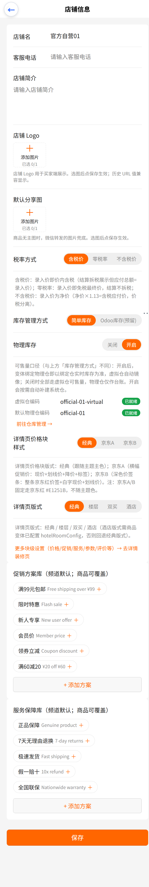
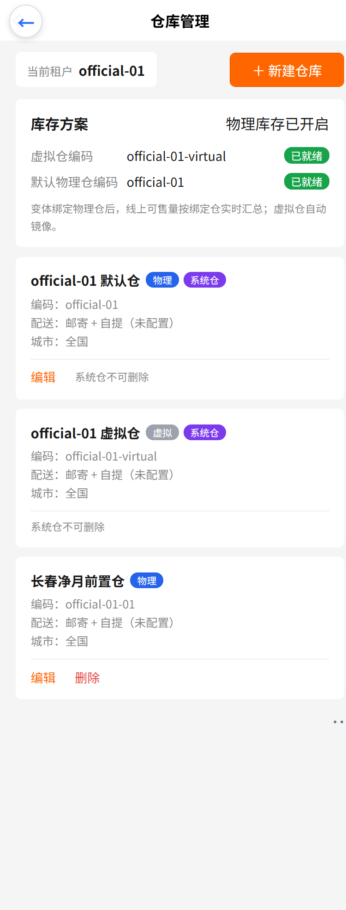
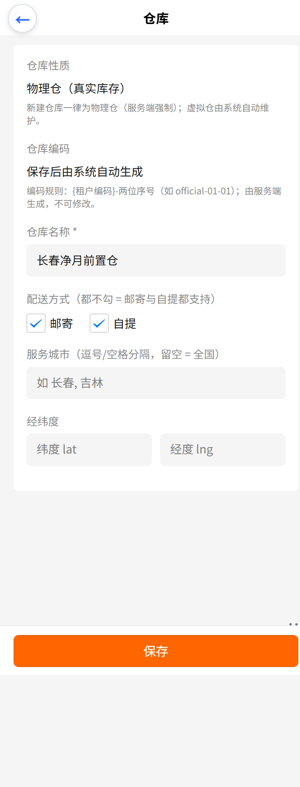

youshop 手机管理后台
商品 × 库存 × 配送的收口说明：物理库存开关、系统仓（虚拟仓 / 默认物理仓）、租户自建仓编码规则、删仓保护，以及可一键复跑的回归用例。
入口：店铺信息 页 →「库存管理方式」区块。该开关是租户级的，存在渠道 customFields.physicalStockEnabled。
| 开关 | 可售量口径 | 物理仓的角色 |
|---|---|---|
| 关闭 | 全部走虚拟仓可售量（历史默认行为） | 仅作台账记录，不参与可售量计算 |
| 开启 | 变体绑定物理仓后，可售量 = Σ 绑定物理仓实时库存；虚拟仓自动镜像（同事务） | 真实库存来源，按仓拆分发货 |
开启开关时，服务端会幂等补建系统仓（虚拟仓恒在，开关开启时补默认物理仓）。补建有两条触发路径：① 保存店铺信息（渠道配置写入口）；② 仓库管理页的「一键初始化系统仓」。任一路径失败都不会让开关处于「已开但无仓可用」的状态。

入口：仓库管理（原「网点管理」）。页面顶部是「库存方案」卡片，下方是本租户的全部仓库。
| 类型 | 编码 | 性质 | 可改 | 可删 |
|---|---|---|---|---|
| 系统仓 · 默认物理仓 | {租户编码} | physical | 可改名称 / 配送 / 城市 / 坐标 | 否（页面上显示「系统仓不可删除」） |
| 系统仓 · 虚拟仓 | {租户编码}-virtual | virtual | 否（系统维护的线上可售源） | 否 |
| 租户自建仓 | {租户编码}-01、-02… | physical（服务端强制） | 可改名称 / 配送 / 城市 / 坐标 | 符合保护条件时可删 |

official-01-01早期版本允许前端自填，导致落库出现 kind=virtual 且 code 为空的行 —— 这类仓无法绑定商品变体（绑定要求 kind=physical 且编码归属当前租户），是「建了仓却绑不上」的根因。现在性质与编码由服务端生成，前端只读展示，从源头消除该类脏数据。
| 仓 | 规则 | 示例（租户编码 official-01） |
|---|---|---|
| 默认物理仓 | {租户编码} | official-01 |
| 虚拟仓 | {租户编码}-virtual | official-01-virtual |
| 自建第 N 个仓 | {租户编码}-{两位序号}，占用则顺延 | official-01-01、official-01-02 |
新建仓库时页面直接给出规则说明，避免运营以为要手填编码：

升级前遗留的未编码仓在编辑页会提示「历史数据未编码，保存后仍按原「虚拟仓」语义归属」—— 保存只会补上租户归属，不改 kind / code，避免历史库存口径发生漂移。
Vendure 核心的删仓在不指定「转移目标仓」时会级联删除该仓全部库存台账（库存静默蒸发）。因此租户删仓接口增加了四道校验，命中任一条即拒绝并原样提示原因：
| 顺序 | 校验 | 提示语 |
|---|---|---|
| 1 | 系统仓（默认物理仓 / 虚拟仓） | 系统仓（默认物理仓 / 虚拟仓）不可删除 |
| 2 | 仓内仍有库存（在库 + 占用 > 0） | 仓库「X」仍有库存 5，请先调拨或清零后再删除 |
| 3 | 仍被商品变体绑定 | 仓库「X」仍被商品变体绑定，请先解绑后再删除 |
| 4 | 仍有未完成的出库预留 | 仓库「X」仍有未完成的出库预留，暂不可删除 |
改 / 删 / 编辑前都会做「渠道可见 + 归属本租户」双重校验：跨租户传入别人仓库的 id 会返回「仓库不存在或不属于当前渠道」，不会误改他人数据。
脚本：vendure/packages/dev-server/e2e-tenant-inventory.mjs，命令 npm run e2e:tenant-inventory（需先起 dev:server + dev:worker）。
| 分组 | 断言 | 结果 |
|---|---|---|
| 概览 | 默认渠道 / 租户渠道均可查；locations 非空 | PASS |
| 系统仓补建 | 虚拟仓就绪；重复调用幂等；开启开关后默认物理仓就绪；两仓均标 isSystem | PASS |
| 自建仓 | 自动编码 {租户}-01、第二个顺延 -02；强制 kind=physical；非系统仓；配送/城市/坐标落库 | PASS |
| 编辑 | 改名 / 改配送方式生效；编码与性质不变 | PASS |
| 保护 | 虚拟系统仓禁编辑；系统仓禁删；跨租户改仓被拒；有库存（5）的仓禁删；清零后可删且系统仓仍在 | PASS |
实跑输出：结果: PASS=23 FAIL=0
| 项 | 命令 / 方式 | 结果 |
|---|---|---|
| cjk-plugin 构建（后端消费 lib） | npm run build（packages/cjk-plugin） | 通过 |
| web-admin 构建 | npm run build:h5 | 通过 |
| nshop 单测 | npm test（15 文件 / 104 用例） | 通过 |
| 后台建仓 UI 链路 | 仓库管理 →＋新建仓库 → 填名称 → 保存 → 列表出现 official-01-01 | 通过 |
不会。双能力渠道优先走服务端 facet 过滤；若索引未同步导致命中 0 条，首页会自动降级重查（去掉 facet 条件）并由前端按配送能力本地过滤，同时保留「该筛选下暂无商品」的空态语义，不再出现空白区块。
两者语义不同：前者决定可售量口径（虚拟仓 / 物理仓镜像），后者描述租户的库存管理方式。界面上已用说明文案显式区分，避免误改。
与仓库编码前缀一致，统一使用渠道唯一标识 channel.code（后台文案称「租户编码」）。平台内部另有可空的 tenantNo，两者不做迁移。